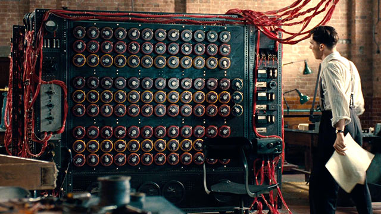

Alan Turing est né le 23 juin 1912 et est décédé le 7 juin 1954.Il était mathématicien
et cryptologue britannique.Ces travaux ont fondés scientifiquement l'informatique.
Il a créé des machines et des programmes permettant de réaliser des calculs,à une époque où les ordinateurs
n'existaient pas.
| Durant la seconde guerre mondiale,les allemands codaient leur communications pour que les alliés ne puissent pas les comprendre.Ils utilisaient une machine qui s'appel énigma.Cette machine était réglée tous les jours différemment,elle est composée de trois rotords et de cablages manuels qui fait qu'il y a plus de 158 miliards de milliards de possibilitées et turing avait la dure mission de craquer cette machine dont le réglage changeait tous les jours. |  |
| Il a ainsi créé une machine (ordinateur)capable de tester toutes les combinaisons pour craquer énigma et il a réussi.Il a permi de sauver 14 millions d'alliés d'attaques allemandes et à permis a la guerre de durer 2 ans de moins |  |
| Ce test consiste à mettre un humain(interlocuteur)en confrontation verbale à l'aveugle avec un ordinateur ou un autre humain.La machine réussi le test lorsque l'interlocuteur n'a pas su identifier si il avait l'homme ou la machine devant lui. |  |
Grâce aux travaux de Turing,nous avons des ordinateurs tel que nous les connaissont aujourd'hui. Malheureusement,Alan Turing est poursuivit par la justice Anglaise en 1952 pour Homosexualité(condamné à l'époque) Ne voulant pas abandonner ces travaux il choisit la castration chimique plutot que la prison. Il est retrouvé mort par empoisonnement au cyanure le 7 juin 1954 à l'âge de 41 ans. Il est reconnu héro de guerre et gracié à titre posthume en 2013 par la reine Elisabeth II
voir la biographie complète.